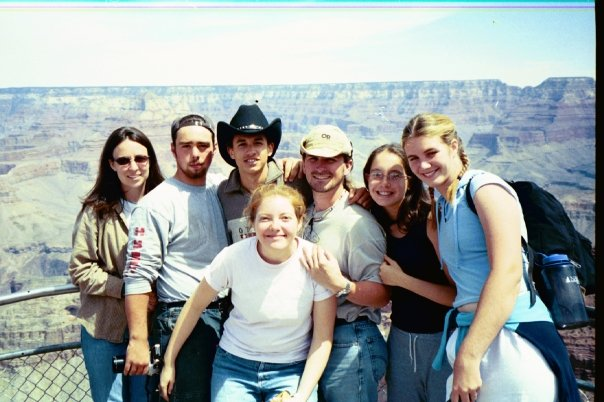
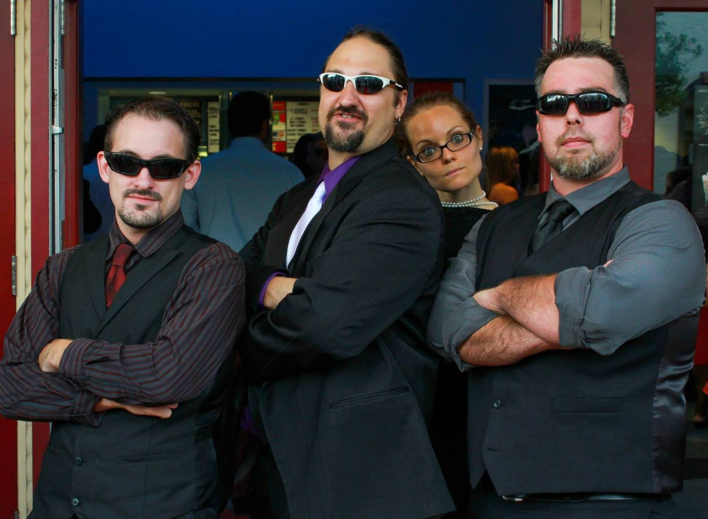

So initially, I had no idea what I wanted to be when I grew up, then again what Highschooler really knows what they want to do
so I thought.... why not be a Doctor?
So to get my feet wet, the summer before my freshman year of college, I decided to become an EMT
This allowed me to get a degree in Biology from USF, as well as some real world experience!

However, after graduation, Life had very different plans for me - So I took the next natural progression when having a Degree in Biology

Although, Acting was alot of fun the bills seemed to add up quickly

and The idea of being a starving artist, did not agree with my appitite
Plus, I was starting to hanging out with
the wrong Crowd

Started to make Questionable decisions
Finally, things just went to Far
What to do next?!?!
There was only one thing that I saw worth doing...

So this is only the beginning to a very long Career in Programming
and no matter how frustarated I get!

I know the in the end the hard work will be worth it